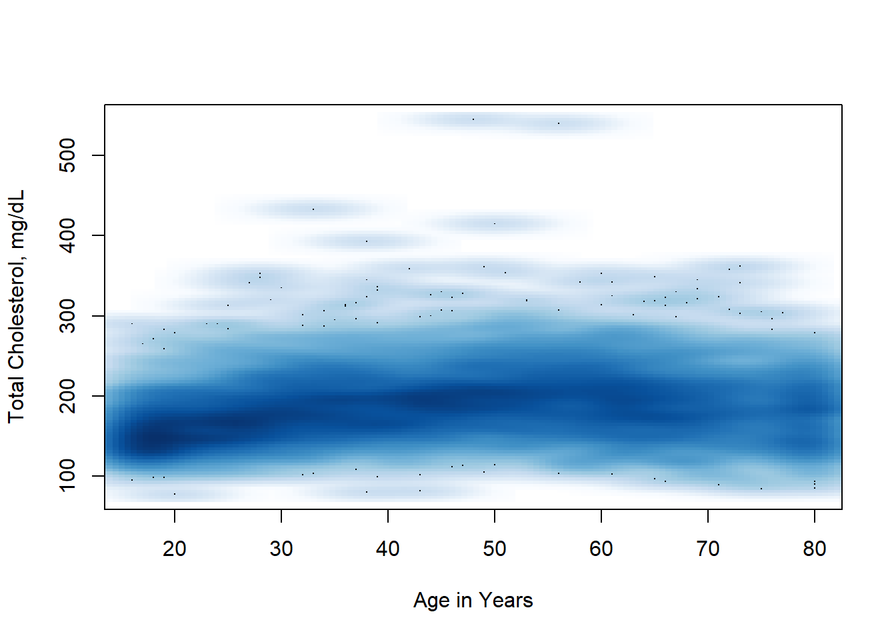

library(tidyverse)
library(survey)
library(DT)
library(flextable)
library(officer)Week 7: Regression Models
Another NHANES example
Let’s take a look at a different NHANES dataset and explore the relationship between cholesterol and age.
There are 6063 observations, some are incomplete and have missing values for some covariates. There are 22 covariates, which as we’ve seen have cryptic names and you need to use the meta-data to resolve them.
We load up the data and the metadata. In the metadata we have a textual description of the phenotype, the short name, and the target. The target tells us which of the sampled individuals was eligible to answer the question.
nhanesDataPath = ""
load("d4.rda")
load("metaD.rda")
DT::datatable(metaD)We will look at the relationship between the variable LBXTC (which is Total Cholesterol in mg/dL measured by a blood draw) and the age of the participant in years.

And we can see that plotting, over-plotting is a substantial issue here. You might also notice what seems like a lot of data at age 80, this is because any age over 80 was truncated to 80 to prevent reidentification of survey participants. In a complete analysis, this should probably be adjusted for in some way, but we will ignore it for now.
We can try some other methods, such as hexbin plotting and smoothScatter

Now we can see a few outliers - with extremely high serum cholesterol. We get a sense that the trend is not exactly a straight line, but rather a parabola, lower for the young and the old and a bit higher in the middle.
We fit a linear model first.
lm1 = lm(d4$LBXTC ~ d4$RIDAGEYR)
summary(lm1)
Call:
lm(formula = d4$LBXTC ~ d4$RIDAGEYR)
Residuals:
Min 1Q Median 3Q Max
-114.68 -27.95 -2.91 23.34 357.19
Coefficients:
Estimate Std. Error t value Pr(>|t|)
(Intercept) 170.0140 1.4340 118.56 <2e-16 ***
d4$RIDAGEYR 0.3708 0.0285 13.01 <2e-16 ***
---
Signif. codes: 0 '***' 0.001 '**' 0.01 '*' 0.05 '.' 0.1 ' ' 1
Residual standard error: 41.24 on 5689 degrees of freedom
(372 observations deleted due to missingness)
Multiple R-squared: 0.02891, Adjusted R-squared: 0.02874
F-statistic: 169.4 on 1 and 5689 DF, p-value: < 2.2e-16plot(lm1$fitted.values, lm1$residuals)
##fit a loess curve
l2 = loess(lm1$residuals ~ lm1$fitted.values)
pl = predict(l2, newdata=sort(lm1$fitted.values))
lines(x=sort(lm1$fitted.values), y=pl, col="blue", lwd=2)
abline(h=0, col="red")
Notice that both terms in the model are very significant, but that the multiple \(R^2\) is only around 2%. So age, in years, is not explaining very much of the variation. But because we have such a large data set, the parameter estimates are found to be significantly different from zero.
Spline Models
- when a linear model does not appear sufficient we can try other models.
- one choice is to use natural splines, which are very flexible
- they are based on B-splines with the previso that the model is linear outside the range of the data
- based on the initial analysis, we chose to use df=7, which gives five internal knots when fitting the splines
- you have almost 6,000 degrees of freedom here, so using up a few to get a more appropriate fit seems good.
library("splines")
lm2 = lm(d4$LBXTC ~ ns(d4$RIDAGEYR, df=7))
summary(lm2)
Call:
lm(formula = d4$LBXTC ~ ns(d4$RIDAGEYR, df = 7))
Residuals:
Min 1Q Median 3Q Max
-113.43 -26.32 -2.88 22.47 343.31
Coefficients:
Estimate Std. Error t value Pr(>|t|)
(Intercept) 154.799 2.178 71.071 < 2e-16 ***
ns(d4$RIDAGEYR, df = 7)1 39.956 3.379 11.826 < 2e-16 ***
ns(d4$RIDAGEYR, df = 7)2 32.705 4.074 8.028 1.20e-15 ***
ns(d4$RIDAGEYR, df = 7)3 55.583 3.637 15.283 < 2e-16 ***
ns(d4$RIDAGEYR, df = 7)4 42.275 3.725 11.347 < 2e-16 ***
ns(d4$RIDAGEYR, df = 7)5 30.111 3.352 8.984 < 2e-16 ***
ns(d4$RIDAGEYR, df = 7)6 41.098 5.758 7.137 1.07e-12 ***
ns(d4$RIDAGEYR, df = 7)7 15.992 2.478 6.453 1.19e-10 ***
---
Signif. codes: 0 '***' 0.001 '**' 0.01 '*' 0.05 '.' 0.1 ' ' 1
Residual standard error: 39.62 on 5683 degrees of freedom
(372 observations deleted due to missingness)
Multiple R-squared: 0.1044, Adjusted R-squared: 0.1033
F-statistic: 94.65 on 7 and 5683 DF, p-value: < 2.2e-16- we can use standard tools for comparing models
anova(lm1, lm2)Analysis of Variance Table
Model 1: d4$LBXTC ~ d4$RIDAGEYR
Model 2: d4$LBXTC ~ ns(d4$RIDAGEYR, df = 7)
Res.Df RSS Df Sum of Sq F Pr(>F)
1 5689 9674185
2 5683 8922039 6 752146 79.848 < 2.2e-16 ***
---
Signif. codes: 0 '***' 0.001 '**' 0.01 '*' 0.05 '.' 0.1 ' ' 1Notice also that the multiple \(R^2\) went up to about 10%, a pretty substantial increase, suggesting that the curvilinear nature of the relationship is substantial.
The residual standard error also decreased by about 5%.
We have lost the simple explanation that comes from fitting a linear model. We cannot say that your serum cholesterol increases by \(a\) units per year, but that model was wrong, so it really shouldn’t be used.
We can use the regression model we fit to make predictions for any one, and these are substantially more accurate.
- even though the regression summary prints out a different row for each spline term, they are not independent variables, and you need to either retain them all, or retain none of them
Sex
- next we might want to start to add other variables and explore the different relationships.
- let’s consider sex, for now we will leave out age, and just try to understand what happens with sex
- first I will fit the model without an intercept
lm3 = lm(LBXTC ~ RIAGENDR-1, data=d4)
summary(lm3)
Call:
lm(formula = LBXTC ~ RIAGENDR - 1, data = d4)
Residuals:
Min 1Q Median 3Q Max
-107.55 -29.55 -3.55 24.21 360.45
Coefficients:
Estimate Std. Error t value Pr(>|t|)
RIAGENDRMale 184.5534 0.7974 231.4 <2e-16 ***
RIAGENDRFemale 189.7914 0.7692 246.7 <2e-16 ***
---
Signif. codes: 0 '***' 0.001 '**' 0.01 '*' 0.05 '.' 0.1 ' ' 1
Residual standard error: 41.76 on 5689 degrees of freedom
(372 observations deleted due to missingness)
Multiple R-squared: 0.9526, Adjusted R-squared: 0.9526
F-statistic: 5.722e+04 on 2 and 5689 DF, p-value: < 2.2e-16here we can see the mean for males is a bit higher than for females
both are significant and notice how large the multiple \(R^2\) value is
this is not a very interesting test - we are asking if the mean is zero, which isn’t even physically possible
our model is \[ y_i = \beta_M \cdot 1_{M,i} + \beta_F \cdot 1_{F,i} \]
where \(1_{M,i}\) is 1 if the \(i^{th}\) case is male and zero otherwise, similarly for \(1_{F,i}\)
instead we ask if the mean for males is different than that for females \[ y_i = \beta_0 + \beta_1 \cdot 1_{F,i} \]
so that \(E[Y|M] = \beta_0\) and \(E[Y|F] = \beta_0 + \beta_1\)
\(\beta_1\) estimates the difference in mean between male and female
lm3 = lm(LBXTC ~ RIAGENDR, data=d4)
summary(lm3)
Call:
lm(formula = LBXTC ~ RIAGENDR, data = d4)
Residuals:
Min 1Q Median 3Q Max
-107.55 -29.55 -3.55 24.21 360.45
Coefficients:
Estimate Std. Error t value Pr(>|t|)
(Intercept) 184.5534 0.7974 231.434 < 2e-16 ***
RIAGENDRFemale 5.2380 1.1080 4.728 2.33e-06 ***
---
Signif. codes: 0 '***' 0.001 '**' 0.01 '*' 0.05 '.' 0.1 ' ' 1
Residual standard error: 41.76 on 5689 degrees of freedom
(372 observations deleted due to missingness)
Multiple R-squared: 0.003913, Adjusted R-squared: 0.003738
F-statistic: 22.35 on 1 and 5689 DF, p-value: 2.327e-06- now we see an Intercept term (that will be the overall mean)
- and the estimate for females is represents how they differ, if it is zero then there is no difference in total cholesterol between men and women
Recreating the analysis from Behesht et al
Data
load("processed_beheshti.RData")
wt_nhanes <- all_nhanes %>%
drop_na(WTMEC2YR, SDMVPSU, SDMVSTRA) %>%
mutate(WTMEC6YR = WTMEC2YR * 1/3)
# Create survey design object
nhanes_design <- svydesign(id = ~SDMVPSU,
strata = ~SDMVSTRA,
weights = ~WTMEC6YR,
nest = TRUE,
data = wt_nhanes)
#Subset the study population
ado_design <- subset(nhanes_design, RIDAGEYR >= 13 & RIDAGEYR <= 18 & !is.na(OHXDECAY))
#Also make a tibble of this data to analyze
ado_data <- wt_nhanes %>%
filter(RIDAGEYR >= 13 & RIDAGEYR <= 18) %>%
filter(!is.na(OHXDECAY)) %>%
filter(!is.na(diabetes))Models
Let’s recreate the analysis shown in table 2 of the Beheshti analysis. The table’s caption explains the 5 different models:
Model 1=crude (unadjusted); model 2=controlled for age, race/ethnicity, gender; model 3=controlled for age, race/ethnicity, gender, BMI; model 4=controlled for age, race/ethnicity, gender, BMI, and family income-to-poverty ratio; model 5=controlled for age, race/ethnicity, gender, BMI, family income-to-poverty ratio, and country of birth.